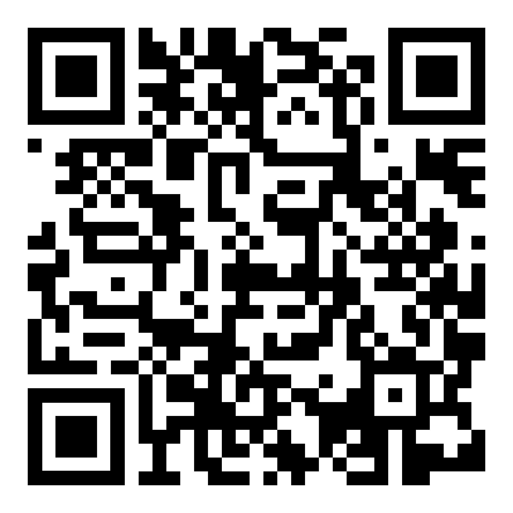

Let's walk to the
Go Straight for
blocks
Go straight for a little bit
Turn Left
Turn Right
It's on your left
It's on your right
Go Back
Turn Around
Show Guide Points
Show Guide Paths
Hamanomachi map made by Heather.
Digital version made by Mark
×
